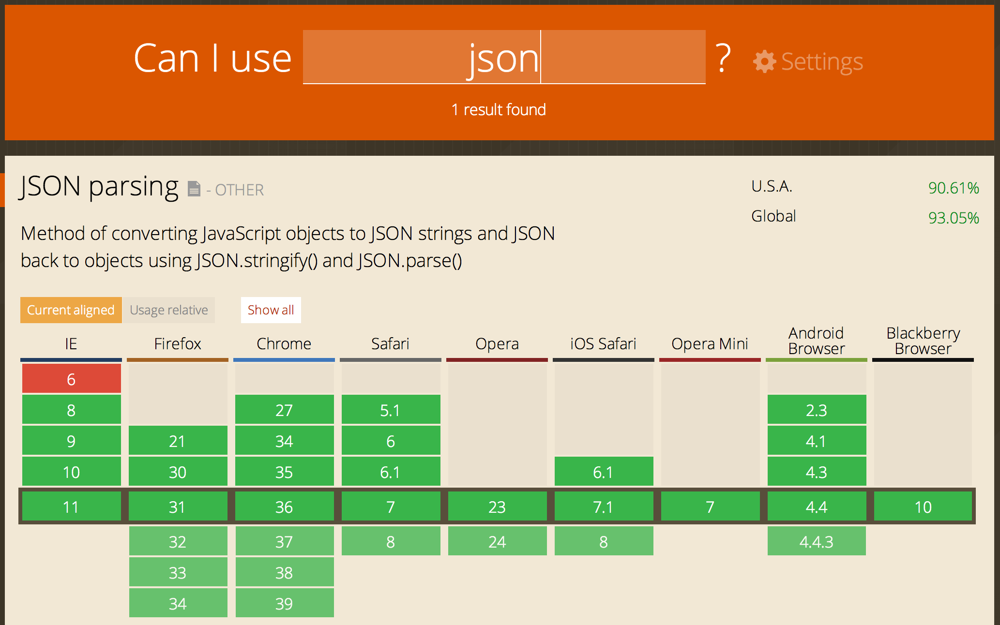

Building Hybrid Apps with AngularJS and Ionic
The missing SDK for the Web
Mike Hartington
Developer Advocate for Ionic
Overview
Native vs Hybrid Apps
Intro Ionic
UI Components
Ionic CLI
Demos
“I want a native app!”
The Downsides of Native
Proficiency in each platform required
Entirely separate code bases
Timely & expensive development
Diminishing returns
More Platforms.
More Problems.


Why are we still coding for multiple platforms?
“Is there an alternative?”
Hybrid Apps: HTML5 that acts like native
Phonegap renamed to Cordova
Web wrapped in native layer
Direct access to native APIs
Familiar web dev environment
Develop a single code base (web platform)
“Then there's this guy...”

http://techcrunch.com/2012/09/11/mark-zuckerberg-our-biggest-mistake-with-mobile-was-betting-too-much-on-html5/
Are You Building
the Facebook app?

Have a multi-million dollar budget?
Have a large team of experienced native developers?
Does your billion-dollar revenue depend on this app?
If so...do native
...but today it's not so black and white
“Hybrid apps are slow!”
“The Times They Are a-Changin'”
Mobile devices have
rapidly improved!
| Year | Device | Processor | RAM |
|---|---|---|---|
| 2007 | iPhone | 620 MHz | 128 MB |
| 2010 | iPhone 4 | 1 GHz | 512 MB |
| 2013 | iPhone 5S | 1.3 GHz dual-core | 1 GB |
| 2014 | iPhone 6 | 1.4GHz dual-core | 1 GB |
Web-standards have
rapidly improved!
caniuse.com is lookin' pretty good nowadays
Android is now Chromium-based
iOS users keep their devices up-to-date
https://mixpanel.com/trends/#report/ios_8/from_date:-29,report_unit:day,to_date:0
https://mixpanel.com/trends/#report/android_kitkat
Native SDKs Are Great
Common UI
Views
Navigation and stack history
Transitions
Gestures
You get a lot of functionality without having to write much code
There's No Web SDK
It's the wild-west for hybrid apps
We need to bridge the gap between web and native
We need rich, native-style UI components and interactions
We need UI APIs, not just jQuery widgets
“Howdy.”
Web Technologies You
Already Know and Love


(You'll feel right at home)

http://www.google.com/trends/explore#q=angularjs%2C%20ember.js%2C%20knockoutjs%2C%20backbonejs&date=8%2F2011%2037m&cmpt=q
Standing on the
Shoulders of AngularJS
Proven for large-scale webapp development
Extends the HTML vocabulary
UI Components using Directives and Services
Native Focused
Modeled off of native SDKs
Built to work with Cordova
Performance Obsessed
Hardware accelerated animations
Minimal DOM Manipulation
Remove 300ms tap delay
Plain ol' CSS
Cohesive visual system
Clean and simple
Easy to customize
Stand-alone CSS (independent of Ionic's JavaScript)

CSS generated from the Sass preprocessor
Quickly give your app its own look and feel
CSS designed to be easily overridden
Variables based with default settings
80+ reusable and useful mixins
“How does it all come together?”
Ionic's Adoption
Top 60 mosted starred Github project
Ionic CLI averages 3,000 downloads/day
120,000+ Ionic apps have been started from our CLI
Released Alpha: November 2013
Released Beta: March 2014
Release Candidate: November 2014
UI Component Overview
Lists
AngularJS Directive
Buttons exposed by swiping
Reorder
Delete
List Item {{ item.id }}
Collection Repeat
Similar to Angular's ng-repeat
Inspired by iOS’s UICollectionView
Scroll through thousands of items
Only renders the viewable items
Smooth jank-free scrolling
{{ c.name }}
{{ c.email }}
Navigation
Uses AngularUI Router
Shows back button when possible
Transitions follow direction of nav
Works with Android's back button
Back
Tabs
Nested views
Each tab has its own nav history
Abstract states in AngularUI Router
Side Menu
Left Menu
...
Slide Box
Slide 1
Slide 2
Slide 3
Action Sheet
AngularJS Service
Inject into controllers
$ionicActionSheet.show({
titleText: 'Action Sheet Example',
buttons: [
{ text: 'Share' },
{ text: 'Move' },
],
destructiveText: 'Delete',
cancelText: 'Cancel',
buttonClicked: function(index) {
console.log('BUTTON CLICKED', index);
return true;
}
});Popover
AngularJS Service
Inline or external template
$ionicPopover.fromTemplateUrl('popover.html',
function(popover) {
$scope.popover = popover;
}
);
My Popover Title
Hello!
Modal
AngularJS Service
Inline or external template
$ionicModal.fromTemplateUrl('modal.html', {
scope: $scope
}).then(function(modal) {
$scope.modal = modal;
});Pull to Refresh
$ npm install -g ionicQuickly create a project with starter templates
Boilerplate app structure ready for customization
Preconfigured tools: Gulp, Sass, Bower, etc.
LiveReload in the browser and on Device
Update Ionic Framework library files
Build and run native apps
Ionic CLI
$ npm install -g ionic cordova$ ionic start myapp sidemenu$ cd myapp$ ionic serve
Ionic Angular Testing
It's just an AngularJS app!
Setup with a great separation of concerns
Karma unit tests
Protractor e2e tests
MIT LICENSED
Free to use (even commercially)
COMMUNITY POWERED
Active developer forum, IRC and GitHub repo
Ionicons

Over 600 MIT licensed font-icons included
Get Started with Ionic!
Easy-to-follow videos, tutorials and formulas
learn.ionicframework.com
Visit the Community Forum
forum.ionicframework.com
Contribute on GitHub
github.com/driftyco/ionic